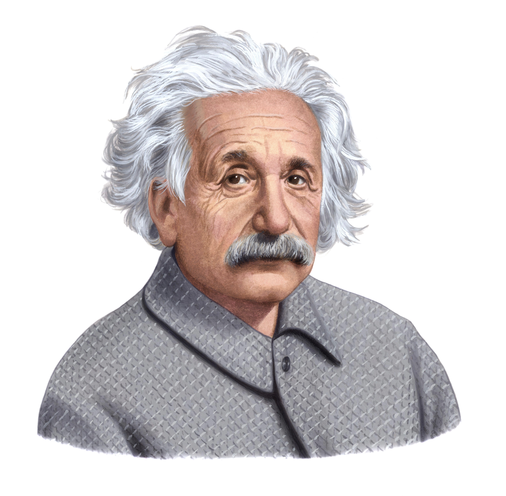

Quantum History

Quantum Mechanics
Dynamics

There are a lot of observable effects which cannot be understood using the framework provided by classical physics. At the beginning of the 20th century, a lot of experiments on atoms, molecules and radiation were still not explained.
The history of Quantum Physics starts on 14 December 1900, when Quantum Mechanics was "born" or, better, proposed by Max Plank.
1900 - Max Plank: Black Body Radiation
A black body is a hypothetical object which is able to emit and absorb radiation of all possible wavelengths. Although there were theories describing the correlation between the radiation intensity and frequency, it was not able to demonstrate the theoretical consideration that all the black bodies should have the same behavior. This spectrum became understandable when Planck published the radiation law . The constant h is called Planck's constant and its value is approximately Js.
1905 - Albert Einstein: Photoelectric Effect
Years later, Albert Einstein managed to explain the Photoelectric Effect on the basis of Planck's quantum hypothesis. The Photoelectric Effect means the emission of electrons from matter as a result of absorption of electromagnetic radiation. It was unclear why this experiment relied fundamentally on the frequence of the radiation, but not on its intensity.
Drag to change the colour of the light
In 1924, Luis de Broglie introduced the idea that particles may also be described as waves, whose wavelength is given by the relation:
, where p is the momentum.
1925 - Werner Heisenberg: Matrix Mechanics
In 1925, Werner Heisenberg, Max Born, and Pascal Jordan interpreted quantum mechanics using a matrix representation. The premise was that all physical observables can be represented by matrices. The set of eigenvalues of the matrix were eventually understood to be the set of all possible values that the observable can have. Measurement in matrix mechanics 'destroys' the state of the system. If one measures two observables simultaneously, the state of the whole system collapses into one common eigenvector of the two observables. Because most matrices don't have any eigenvectors in common, most observables cannot be measured precisely at the same moment. This is the uncertainty principle.
1926 Erwin Schrödinger: Wave Mechanics
The Schrödinger equation describes the evolution of a quantum system over time.
Schrödinger general equation
1932 John von Neumann: Quantum Mechanics[1]
Go to top
Quantum Mechanics provides a framework for the development of physical theories. It states a set of postulates that a physical theory must satisfy.
We shall consider only finite-level quantum systems, since each physical system must be transformed into a discrete one in order to be able to represent it in computers.
We denote a particle being at at some point with the ket notation:
...
Now we can represent an arbitrary state as a linear combination of some basic states,
since a particle in the quantum universe can exist in each state with a suitable probability.
We say the state is a superposition of this basic states.
The norm square of the complex amplitude divided by the norm squared of the state gives us the probability of observing the particle at position , .
Another fundamental property of the subatomic particles is called spin, a concept which describes a physical interpretation of a particle spinning along its axis.
Why is this property useful?
It plays a major role in the implementation of qubits. There are only two spin states, so every arbitrary state will be a superposition of the two possible basic spins.
Now we can investigate the meaning of the inner product for our state space. It enables us to compute the transition amplitude, a tool in determining the final state for the system after the measurement.
Suppose there are two normalised states:
,The final state is going to be the row vector consisting of the conjugate coordinates of .
To find the transition amplitude, we just need to do the multiplication (compute the inner product):
Intuitively, in quantum physics we modify the state of the system by measuring a particular value. Therefore, we can model this behaviour making use of this operator which maps states to other states. Furthermore, possible measurement results are (only) the eigenvalues of the operator A. It can be proven that the eigenvectors form a basis for our state space.
Now, the next problem which arises is the correlation between two observables. We want to obtain a very precise measure of both if they are not related, but as the Heisenberg's principle states, this is not the case.
Take two observables A and B and an arbitrary state x. Then, the product of the variances of these operators
If our result after the measurement is the eigenvector , the final state of the system will always be the eigenvector corresponding to that particular eigenvalue.
Go to top
So far we have discussed static quantum systems. Even though changes occur as an outcome of the measurement, the system itself was not time-dependent. Now we need to add the dimension of quantum dynamics.
The evolution for the quantum system, in the Schrödinger representation, is given by the time evolution of the state vector.
The evolution operator, U, must be linear and unitary.
This gives us the intuition of how the process of quantum computation look.
The computer is in the initial state , and we apply a sequence of unitary operators starting from this state. At the end of the computation, the output is measured and the system falls into the final state.
In order to relate this sequence of steps to real quantum mechanics, we make use of Schrödinger equation:
Energy is one of the observables for the system, so it can be represented as a hermitian matrix, which is called the hamiltonian of the system. The equation relates the variation of the state vector with respect to time with this observable.
Go to top
Two independent quantum systems A and A', with vector spaces V and V', can be merged together such that the state space will be the tensor product V V'.
The basic states of this merged system will be the tensor product of the basic states of A and A'. However, we are not able to represent a general state vector as a tensor product of two states, one from A and the other one from A'.
States which can be separated into a tensor product of states from its subsystems are called separable, whilst the unbreakable states are said to be entangled.
This detail has a huge importance for our design. Like energy, momentum or other properties, the total spin of a quantum system is constant. Therefore, the spin states of particles in an isolated system will be entangled.
This property will have a huge importance for most of the algorithms, as we will see in the next section.
Go to top